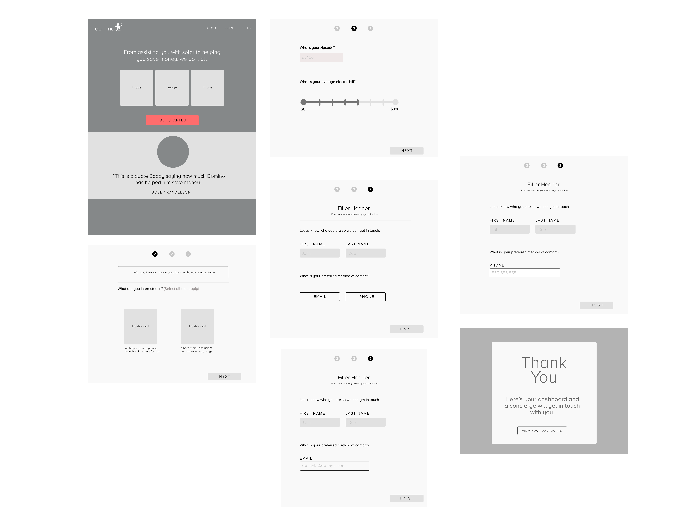

MyDomino.com
Redesigning the company homepage through a design sprint exercise
About
I was tasked with redesigning our website, but since I had recently joined the team, I felt that I didn’t have enough context. So, I decided to use a design sprint to lead this redesign. I wanted to achieve two goals here:
- Validate our assumptions on why lead conversion is low
- Give a fresher visual identity

Day 1: Understanding
Existing Solutions
I started the process by gathering competitor user flows and arranging them alongside our current design. This helped participants to start with shared understandings of the design context. This also helped to reduce repetitive ideas during the sketching exercises.
Initial Testing
Before the design sprint, I also ran first-impression tests on the previous website. During the design sprint, the test results lent insight to how we could focus the improvement on our current design.
Day 2: Sketching
Sketching is a practice that removes personal attachment to an idea and instead places it into a literal picture. People can then discuss an idea as a schematic rather than one owned by a person. This step also usually involves white-boarding the broader user story, which is then dissected for the current sprint. However, our goal had already been narrowed during Day 1, so we skipped the broad user story.
Crazy Eights to Storyboards
We used Crazy Eights as a rapid sketching exercise to get participants quickly cranking out ideas. We then created storyboards with our strongest ideas.
Crazy Eights


Note: Getting people to sketch their ideas can be quite difficult. I did a test round as the first round of Crazy Eights, and it worked out really well. People often need to warm-up before diving in with pen and paper.
Storyboards


Day 3: Design
After sketching, we found a design flow that resonated with all us. We made an assumption that if users understood what we were offering, they would be more likely to become a lead. Our prototype consisted of a multi-step process that guides the user through questions. We found that this process would greatly inform and prepare concierges before they contact our users.
Wireframes
I do my wireframes in gray scale as I can focus on the composition before moving onto a more complex design. I produce my protoypes quicker, while also tightening the feedback loop.

Homepage

Days 4 & 5: Testing & Learning
I took our prototype through a five-second test to evaluate people’s impressions of the new website design. The results overwhelmingly supported our user assumption. For a more in-depth analysis, we quickly built a landing page. Here are some of our findings:
- 16% increase in site engagement
- 10% decrease in bounce rate
- 63 second increase in completion time, but double the leads
Design Sprint Wrap-Up
Although it took longer for users to complete the task, they were more willing to complete the task. Our assumption proved to be correct! In the end, we were able to keep people engaged, reduce dropoffs, and increase leads with the new website.
We spent the next week building out the sign-up flow for A/B testing. After evaluating our test results, we ended up using the prototype as our new homepage.
Moving forward
We are currently building the interior pages (About, Press, Blog) and polishing small details (micro-interactions & edge cases) of the sign-up flow. Current work is confidential; please contact me to see private work